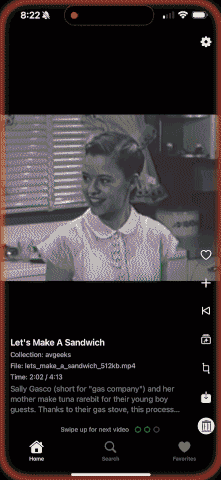

LostArchiveTV
A TikTok-style iOS video player for exploring Internet Archive content

Discover the Internet Archive in a New Way
LostArchiveTV lets you explore historical films, educational videos, and other video content from Archive.org in a modern, swipeable interface.
Swipeable Interface
TikTok-style navigation with bidirectional swiping
Trim Videos
Save interesting clips directly to your Photos library
Smart Search
Find videos using natural language queries
Similar Videos
Find related content using OpenAI embeddings for semantic matching
Favorites System
Save and revisit your favorite archive discoveries
Available Now
Download LostArchiveTV and start exploring the Internet Archive's vast collection today!
Get on App Store